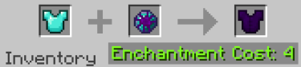

Enderite Armor
Please read Enderite on information on how to obtain Enderite before continuing.
Crafting
To craft Enderite Armor, you place the Diamond equivalent of the armor you want in the first slot of an anvil, and an Enderite Gem in the second slot. The crafting recipe bellow shows this in action. It costs 4 experience points to perform this action.
Information
This armor is statistically better than all other armors. It is 2 armor levels above Diamond and 1 armor level above Netherite. However, it does NOT give the player knockback resistance, unlike Netherite armor.